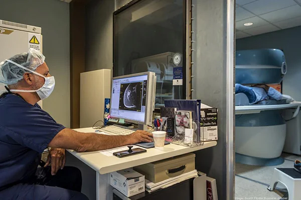

HomeSecond opinion
Before you agree to it, let me look.
If you’ve been told you need a bigger operation, that nothing more can be done, or if a surgery didn’t fix the problem, send me your images and reports. I read them myself, and I’ll tell you what I see, including when I agree with your surgeon.

Read by Dr. Badia himselfFour things patients have been told.
Each of these is a real patient story Dr. Badia has filmed.
“The surgery didn’t work.”
Four failed procedures, then Miami
A professional tennis player from Australia flew to the United States after four procedures left him with continued wrist pain.
“We operated twice.”
Two surgeries without improvement
A patient from Venezuela had two operations that didn’t help, until he came to Miami.
“We’ll remove the bone.”
Offered LRTI for thumb arthritis
A patient in Georgia was told to have his trapezium removed. He chose a thumb joint replacement in Florida instead.
“It’s just a sprain.”
The wrist that never healed
Many urgent care visits end with “wrist sprain.” Some of those are ligament tears an X-ray won’t show, like this patient’s fall at work.
From your inbox to a plan, without a flight.
Most second opinions start as a video visit. You only travel if there’s something to do in Doral.
Additional services and prescriptions are discussed during the consultation.
Step 1
Tell us what you were told
Fill in the short form below with the problem and what’s been recommended.
Step 2
A coordinator calls you
In English or Spanish. They explain the next steps, including how to send your records.
Step 3
Send your records
X-rays, MRI, CT, operative reports and anything else from your doctors, for Dr. Badia to review before you meet.
Step 4
Confirm your visit
Once payment is received, you get an email with your video visit time.
Step 5
Meet Dr. Badia
On a secure video call, he goes through your images with you, answers your questions and recommends what he would do.
What were you told?
Two minutes. A coordinator will contact you to arrange your records and a video visit.
- Don’t attach images here. Your coordinator will explain how to send them.
- Prefer to talk? Call (305) 227-4263, Monday to Friday, 8:30 am to 5:00 pm Eastern.